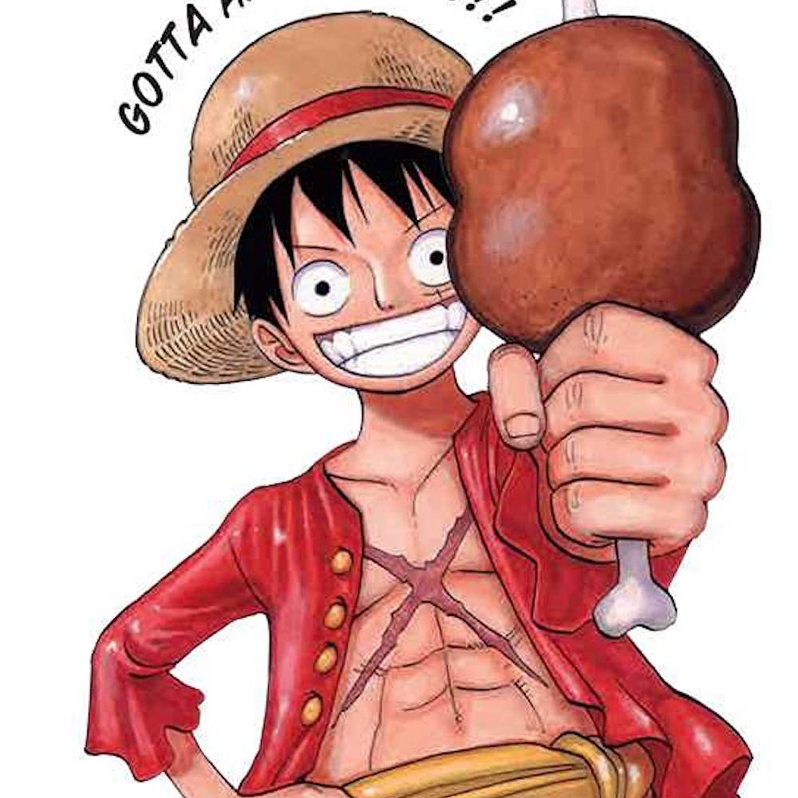

Meat

This is meat cooked for the captain of a pirate ship. It is also
Monkey D. Luffy's favorite food
Ingredients
Steps
- Find something that is hot enough to cook meat or start a fire
- Heat up the meat until interior reaches a temperature of 145F
- Put seasoning on meat if you like